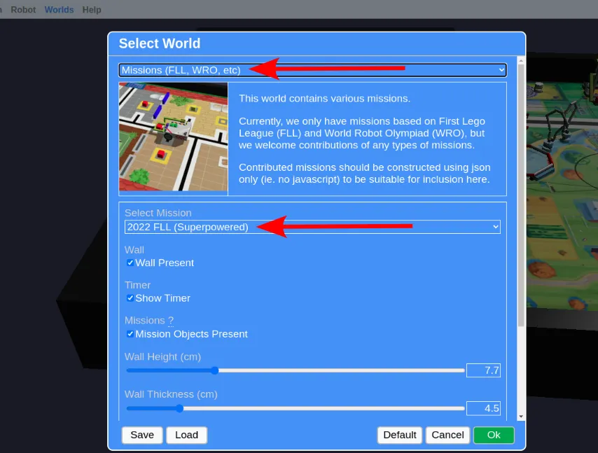

Movement Challenges
Make use of what you have learned to complete the following challenges in GearsBot.
Load the "2022 FLL (Superpowered)" world (Worlds => Select World => Missions => 2022 FLL Superpowered).

Switch to the "Cage Bot" robot (Robot => Select Robot => Cage Bot).
Challenge
Pick up the tray and bring it back to the home area.
Tips
-
The motors and sensors on the "Cage Bot" are not the same as the default "Single Sensor Line Follower" robot (eg. Port 2 on the Cage Bot is not an ultrasonic). You'll need to change your motor / sensor initialization code to suit the Cage Bot, or your program won't even run!
-
The tires will skid if your robot accelerates too rapidly. If your robot does not behave consistently, change the robot base settings to reduce the speed and acceleration to a low value. Read the Pybricks documentation to learn how.
-
You can use the ultrasonic to stop a little more consistently near the tray, but that isn't necessary for this challenge (...in an actual competition, you should be using your sensors extensively to ensure your robot moves consistently).